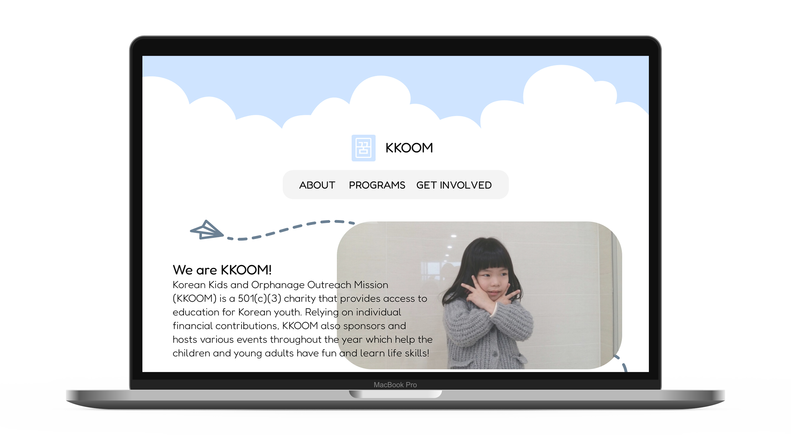
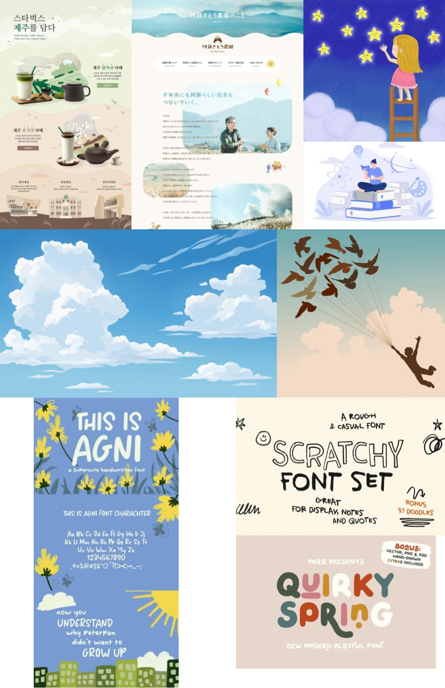
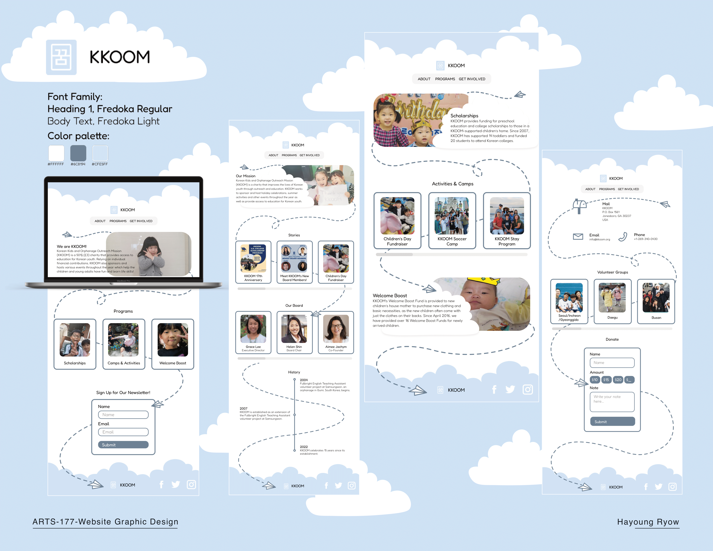

nonprofit website redesign
web design

toolkit
Programs Used: Figma
the project
KKOOM is a nonprofit organization dedicated to providing youth with education and care. Their current website is somewhat aesthetically pleasing, however, there is a mismatch between the organization's mission and the aesthetic of the website, as the current design comes across as somewhat sterile and academic. In my redesign, I incorporated elements that people commonly associate with dreams, as KKOOM means dream in Korean. To match this, I incorporated a paper airplane meandering around as well as clouds throughout the page to evoke a childlike feel.
moodboard

wireframes
final product

+ back to projects +